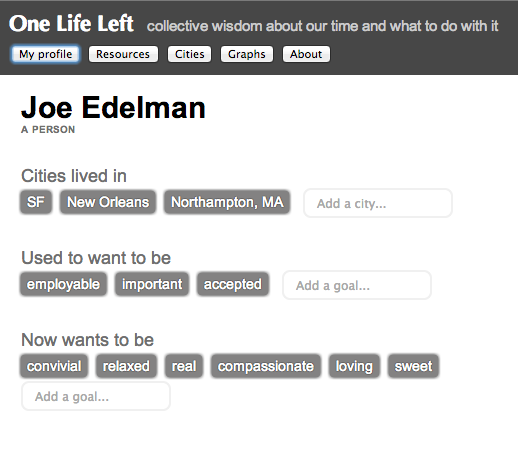
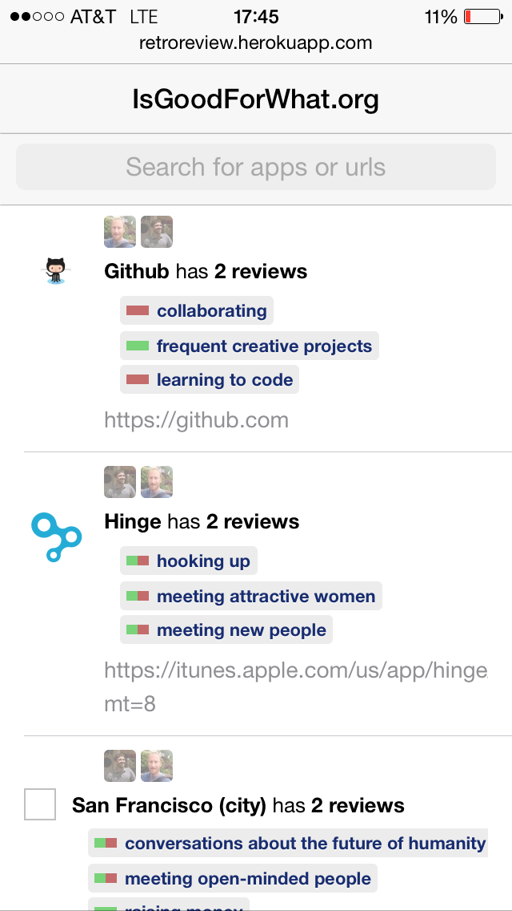

Year by year, our phones guide ever more of our time allocation and purchasing decisions. Can they help us use our time and money well? Ideally, browsing and buying interfaces would include information about what we're likely/unlikely to regret. Some decisions--visiting facebook, downloading angry birds, buying a donut--have an unusually high chance of being regretted. Others--messaging a friend for a picnic, playing games with your kids, dreaming about your future--are rarely regretted, but are missing from our homescreens or notifications. Indeed, the so-called “engagement metrics” which increasingly dictate what comes to our attention on phones--these are steps in the wrong direction. Rather than “collective intelligence”, an internet built on virality, popularity, top grossing and most downloaded apps, clicks, views, likes, shares, reshares, and so on... fosters a kind of group impulsiveness. Below we'll consider data and UX requirements for informed choices about time and money. We'll focus on averting a particular kind of regret: that which we feel upon realizing either that our hopes with a thing were never likely, or that we've underestimated the direct costs (e.g., how much time it would take) or the opportunity costs (e.g., when we find a more effective action we could have taken instead). The opposite of regret is to be glad we spent our time the way we did. Day after day, time well spent makes a life well lived. What could be more important? ## The state of the art As we browse options, we have certain idealized outcomes in mind that structure our search, and we make local choices with those in mind. To do this well, we need at least two kind of information: information about costs (which can be high in unexpected ways), and information about our expected benefits and how those pursuits pan out for other people whether via the options under sconsideration or via other options. Our clearest direct costs are measured in hours or dollars. A few products already provide estimates of time to engage, and users love it.  Benefits are more subtle. Often they guide us subconsciously and we don't consciously know what we are searching for. The closest thing to a standard for conveying benefits are the SIPs pulled out of reviews by Yelp, Amazon, and Google.  But these don't match our subconscious hopes very well. A few products go more directly after outcomes.   The products that can take this approach are the ones that are most aligned with users wellbeing. But even these cannot provide information about the probability of reaching the benefit using the product with a given investment of time. Indeed, it's not clear if anyone knows the overall likelihood of getting fit via joining a running meetup, or finding a life partner via investing 40 hours in a dating app. Do these things work out? What kind of investment is required for what kind of payoff? How do the alternatives compare? Currently the issue of whether engaging with an app or a product is worth it is sometimes addressed using five star user generated reviews. These reviews, while producing better guidance than do popularity and virality metrics, do not reflect observed outcomes. A product like Angry Birds can receive excellent reviews and still be a regretted engagement for many users. Let's see if we can do better. ## An named-outcome approach Consider an approach where we identify (either by guessing or by outright asking the user) what the hoped for outcomes are for a particular site, app, product, venue, etc. Here's *facebook.com*. A hypothetical chrome plugin has indicated that the outcomes the user may have in mind haven't quite worked out for others.  We could also provide hints as to what other engagements might work better.  What works for websites and apps can also work for products. <img src="img/amazon-warning.png" class="smaller"> ## Data about outcomes To provide this UX we need data. Specifically, we must capture outcomes--both desired and observed--from the users who've engaged with each app, website, product, venue, event series, etc. To provide meaningful signals across the top apps and web products, we won't need millions of reviews, but we would need an articulate, representative, and accurately retrospective set of reviewers. Perhaps like the Neilsen families but for the internet age, and capturing not just the fact of the engagement, but what it was about. Reviewers will need to be reminded of the costs involved in the engagement, to be given a quick and articulate way to report what the engagement was *about* for them, and then to report how their desired outcomes have worked out so far and what else has happened. Occasionally, they'll need to be able to extend the schema of desired outcomes in a way that keeps the schema tight. We've created a new survey instrument for conducting these values-aware, retrospective reviews. <img src="img/review.png"> ## Aggregating outcome data To collect the choices made by various people, what they were about, and how they turned out--this can be a powerful resource and not just at the moment of choice. Consider the possibility of a community-produced destination site, Wikipedia-like, but focused on life choices made, what they were about for the individuals involved, and how it all worked out. There would be interest in choices involving apps, websites, products, but also in larger life choices, like moving to a new city, quitting a job, etc. <img src="img/diy-oll.png" class="smaller">   Of special interest would be to map migrations across desired outcomes. For instance, how do people change their activities as they learn about what's possible or what satisfies them?  Many such maps are possible. What do people that want to "be successful" or "get fit" tend to want 6 months or a year later? Which desires are the most durable--are a users current desires likely to last through changes in perspective during an engagement? This is a data visialization and data storytelling challenge. ## Interfaces for informed choice While the outcome indicators above may change some browsing and buying behavior, the greatest promise lies in contructing new browsing and shopping interfaces that could only exist with outcomes data. Recommendation interfaces are some of the most promising. Our previous studies have indicated that user behavior can change significantly when recommendations are ordered by desired outcome and ranked by reported likelihood of an outcome working out. <img src="img/bright-ideas-3up.png" class="smaller"> <div class="sidenote"> Two Lives Left -- a demo calendar app using our data, that helps you visualize your life and makes it easy to add exercise, friend dates, and the things that make you happy to your week, and browse the web for activities (not just events!) to add to your calendar. https://itunes.apple.com/us/app/sand-calendar-day-planner/id687579461 </div> Ultimately the goal is to provide data at the moment when important life choices are made, including purchasing, calendaring, and browsing choices. Here is what a calendaring interface might look like with a notion of activities built-in: <img src="img/sand.png" class="smaller"> <div class="sidenote">(see https://github.com/timewellspent/NoRegrets for some previous work with Aza Raskin that we'll be repurposing)</div> With browsing, besides the chrome bar indicators above, an extension could change the browsing experience to give you heads-up when following a link is not in alignment with your current or life goals, or guides you towards better uses of your web time. The biggest changes will come from reorganizing device home screens, discovery interfaces like Google Now, and the app-user relationship including notifications, in accord with the desires of the user. **TODO: discovery mock up** ## Conclusion In 1930, economist John Maynard Keynes saw that the particular metrics that drive capitalism--sales, clicks, views, etc--would at some point cease to be useful and in fact would start driving us in the wrong direction. He writes that our society would have a collective "nervous breakdown" unless: > "we shall once more value ends above means and prefer the good to the useful. We shall honour those who can teach us how to pluck the hour and the day virtuously and well." Perhaps it's finally time to address that situation, to better align economic demand with retrospective reports of informed and fulfilled lives. We may have the opportunity to measure demand with the question “what are you glad that you bought?” instead of “what did you buy?”, and similarly online with “what are you glad you clicked?” rather than “what did you click?”. Economic demand will be driven by reports of informed and fulfilled lives. If a named-outcome approach succeeds, we can hope that collective wisdom about outcomes will eventually be a distributed, internet-level concern, below the content and application layers, and that people will work together to create the most fulfilling outcomes for one another in much the same way they currently collaborate to generate sales, clicks, and views. <div class="ack"> Thanks to [Tristan Harris](http://twitter.com/tristanharris), [Bret Victor](http://worrydream.org), [Tom Chi](http://tomchi.com), [Jonathan Harris](http://number27.org), [Aza Raskin](http://azarask.in), and [Dan Mosedale](http://github.com/dmose) for motivating and clarifying discussions. </div>